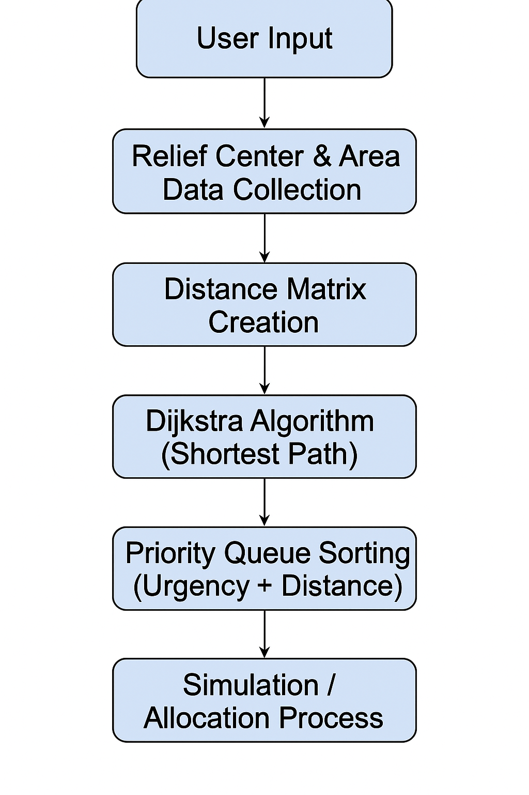

The workflow of the Flexible Disaster Relief Allocation System includes several key steps to ensure efficient and prioritized resource distribution.

Figure: Workflow of Flexible Disaster Relief Allocation System